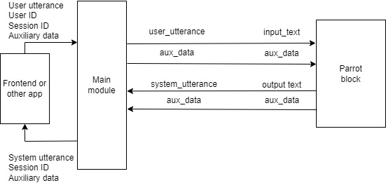
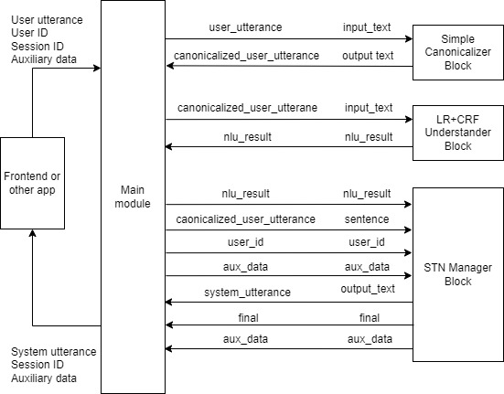
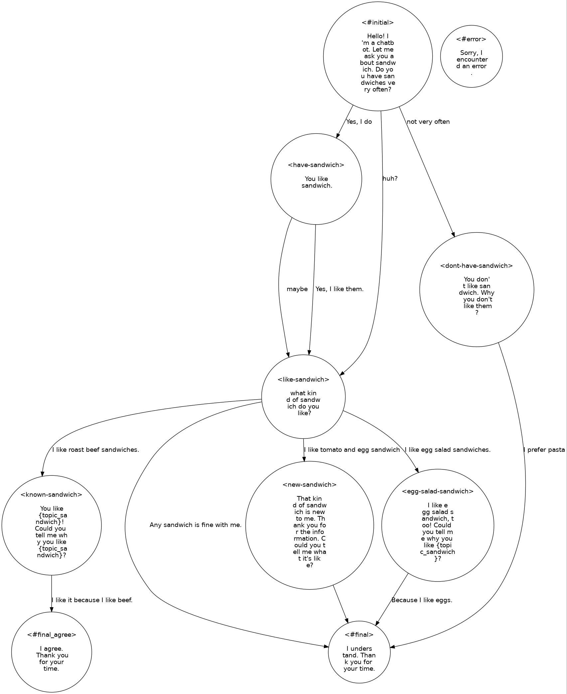

3. Tutorial
3.1. Introduction
DialBB comes with several sample applications. In this chapter, we will use the English applications among them to explain the structure of a DialBB application and the method for building an application using DialBB.
For instructions on how to run these applications, please refer to README.
3.2. Parrot Sample Application
3.2.1. Description
This is a simple application that just parrots back what the user says. It does not use any built-in block classes.
It can be found in sample_apps/parrot.
The configuration file that defines this application is located at sample_apps/parrot/config.yml, and its contents are as follows:
blocks:
- name: parrot
block_class: parrot.Parrot
input:
input_text: user_utterance
input_aux_data: aux_data
output:
output_text: system_utterance
output_aux_data: aux_data
final: final
blocks element is a list of configurations for the blocks used in this application, referred to as block configurations. This application uses only one block.
name specifies the name of the block. This name is used in logs.
block_class specifies the class name of the block. An instance of this class is created to exchange information with the main module. The class name should be written as a relative path from the configuration file or from the dialbb directory.
The block class must be a subclass of dialbb.abstract_block.AbstractBlock.
input defines how information is received from the main module. For example:
input_text: user_utteranee
This means that the blackboard['user_utterance'] in the main module can be referenced as the input_text element in the argument (dictionary type) of the process method of the block class.
output specifies the transmission of information to the main module. For example,
output_text: system_utterance
means that blackboard['output_text'] in the main module is overwritten or appended with the output_text element in the output (dictionary type) of the process method of the block class.
When illustrated, it looks like the following:

The symbols above the arrows connecting the main module and the block represent the keys on each side: the left side shows the key in the blackboard of the main module, while the right side shows the key for input or output in the block.
Additionally, by looking at sample_apps/parrot/parrot.py, you should be able to better understand the concept of block classes in DialBB.
3.2.2. Debug Mode
By setting the environment variable DIALBB_DEBUG to yes as shown below, the log level will switch to debug mode.
export DIALBB_DEBUG=yes; python run_server.py sample_apps/parrot/config.yml
This will output detailed logs to the console, which should help deepen your understanding by observing the system’s behavior in more detail.
3.3. ChatGPT Dialogue Application
3.3.1. Description
Using ChatGPT Dialogue (ChatGPT-based Dialogue Block), we will conduct a dialogue with OpenAI’s ChatGPT.
It can be found in sample_apps/chatgpt/.
The contents of sample_apps/chatgpt/config_en.yml are as follows.
blocks:
- name: chatgpt
block_class: dialbb.builtin_blocks.chatgpt.chatgpt.ChatGPT
input:
user_id: user_id
user_utterance: user_utterance
aux_data: aux_data
output:
system_utterance: system_utterance
aux_data: aux_data
final: final
user_name: User
system_name: System
first_system_utterance: "Hello! Let's talk about food. What kind of cuisine do you like?"
prompt_template: prompt_template_en.txt
gpt_model: gpt-4o-mini
The exchange of information with the main module is illustrated as follows.

In addition to input and output, several other parameters are configured as block configuration parameters.
The prompt_template specifies the template for the system prompt.
The contents of the prompt template sample_apps/chatgpt/prompt_template_en.txt are as follows.
# Task Description
- You are a dialogue system and are chatting with the user on food. Please generate next system utterance in less than 30 words.
# Your persona
- Emma
- female
- likes chocolates and wines
- working for an IT company
- very friendly and extrovert
# Situation
- You first met the user.
- The user and you are in the same age group
- The user and you talk friendly
# The flow of dialogue
- Introduce each other
- Tell the user that you like Italian food
- Ask the user if se/he likes Italian food
- If the user likes Italian, ask the user which kind of Italian food she/he likes
- If the user doesn't like Italian, ask her/him why.
# Dialogue up to now
@dialogue_history
The dialogue history up to that point is inserted at the end of @dialogue_history in the following format.
System: Hello! Let's talk about food. What kind of cuisine do you like?
User: I like Italian food.
System: That's awesome! Italian food is so delicious. What's your favorite dish? Pasta, pizza, or maybe something else?
User: I like pasta.
Here, “System” and “User” use the names specified in the configuration as user_name and system_name.
3.3.2. Creating an Application Using the ChatGPT Application
To create a new application by reusing this application, follow these steps:
Copy the entire
sample_apps/chatgptdirectory. It doesn’t need to be placed within the DialBB directory; any directory will work.Edit
config.ymlandprompt_template_en.txt. You can also rename these files if desired.Start the application with the following command:
export PYTHONPATH=<DialBB directory>; python run_server.py <configuration file>
3.4. Simple Application
Here is a sample application using the embedded blocks.
(As of v0.9, it has been replaced with an application that does not use Snips NLU.)
It can be found in sample_apps/simple_ja/.
3.4.1. System Architecture
This application has the following system architecture.

This application uses the following three built-in blocks. Details on these built-in blocks are explained in Section 5.
Simple Canonicalizer: Normalizes user input sentences (converting uppercase to lowercase, etc.).
LR-CRF Understander Performs language understanding. It uses Logistic Regression and Conditional Random Fields (CRF) to determine user utterance types (also known as intents) and extract slots.
STN Manager: Manages dialogue and generates language. Dialogue management is performed using a State Transition Network (STN), which outputs system responses.
3.4.2. Files Comprising the Application
The files that make up this application are located in the sample_apps/simple_ja directory (folder).
The sample_apps/simple_ja directory includes the following files:
config.ymlThis is the configuration file that defines the application. It specifies which blocks to use and which files each block should load. The format of this file is explained in detail in Section 4.3.
config_gs_template.ymlThis is a template configuration file for using Google Spreadsheet instead of Excel for the knowledge needed by the LR-CRF Understander block and the STN Manager block. You can use it by copying the file and adding information needed to access Google Spreadsheet.
simple-nlu-knowledge-ja.xlsxThis file contains the knowledge (language understanding knowledge) used by the LR-CRF Understander block.
simple-scenario-ja.xlsxThis file contains the knowledge (scenario) used by the STN Manager block.
scenario_functions.pyThis is a program used by the STN Manager block.
test_inputs.txtThis is the test scenario used for system testing.
3.4.3. LR-CRF Understander Block
3.4.3.1. Language Understanding Result
The LR-CRF Understander block analyzes the input utterance and outputs the language understanding result.
The language understanding result consists of a type and a set of slots.
For example, the language understanding result for “I like roast beef sandwiches” would be as follows.
{
"type": "tell-like-specific-sandwich",
"slots": {
"favorite-sandwich": "roast beef sandwich"
}
}
The phrase is categorized under the type "tell-like-specific-sandwich", and the slot "favorite-sandwich" has the value "roast beef sandwich". There may be utterances that contain multiple slots as well.
3.4.3.2. NLU Knowledge
The language understanding knowledge used by the LR-CRF Understander block is written in the simple-nlu-knowledge-en.xlsx file. For details on the description method of this language understanding knowledge, refer to nlu_knowledge. Below is a brief explanation.
The language understanding knowledge consists of the following two sheets:
Sheet Name |
Content |
|---|---|
utterances |
Examples of utterances for each type and the slots that should be extracted from those utterances |
slots |
Relationship between slots and entities |
Here is an excerpt from the utterances sheet.
flag |
type |
utterance |
slots |
|---|---|---|---|
Y |
yes |
yes |
|
Y |
yes |
yeah |
|
Y |
tell-like-specific-sandwich |
I like roast beef sandwiches |
favorite-sandwich=roast beef sandwiches |
Y |
tell-like-specific-sandwich |
chicken salad sandwiches are my favorite |
favorite-sandwich=chicken salad sandwiches |
The first row indicates that the type of “yes” is “yes”, and it has no slots. The language understanding result for “yes” would be as follows:
{
"type": "yes"
}
The language understanding result for “chicken salad sandwiches are my favorite” would be as follows:
{
"type": "tell-like-specific-sandwich",
"slots": {
"favorite-sandwich": "chicken salad sadwiches"
}
}
The flag column is used to specify in the configuration whether or not to use that row.
Next, here is a portion of the contents from the slots sheet.
flag |
slot name |
entity |
synonyms |
|---|---|---|---|
Y |
favorite-sandwich |
roast beef sandwich |
roast beef, roast beef sandwiches |
Y |
favorite-sandwich |
egg salad sandwich |
egg salad sandwiches, Egg Salad |
The slot name column indicates the slot name, entity specifies the slot value, and synonyms lists synonyms for that value.
For example, the first row indicates that if values like roast beef or roast beef sandwiches are obtained as slot values for the slot favorite-sandwich , they will be replaced with roast beef sandwich in the language understanding result.
3.4.3.3. Construction and Use of Language Understanding Models
When the application is launched, models based on logistic regression and conditional random fields (CRFs) are created using the aforementioned knowledge and are utilized during runtime.
3.4.4. STN Manager Block
3.4.4.1. Overview
The STN Manager block performs dialogue management and language generation using a State-Transition Network (STN). The State-Transition Network is also referred to as a “scenario.” The scenario is documented on the scenario sheet within the simple-scenario-ja.xlsx file. For details on how to write this sheet, please refer to Section 5.4.2.
3.4.4.2. Scenario Description
A portion of the scenario description is provided below.
flag |
state |
system utterance |
user utterance example |
user utterance type |
conditions |
actions |
next state |
|---|---|---|---|---|---|---|---|
Y |
like-sandwich |
what kind of sandwich do you like? |
I like egg salad sandwiches. |
tell-like-specific-sandwich |
_eq(#favorite-sandwich, “egg salad sandwich”) |
_set(&topic_sandwich, #favorite-sandwich) |
egg-salad-sandwich |
Y |
like-sandwich |
I like roast beef sandwiches. |
tell-like-specific-sandwich |
is_known_sandwich(#favorite-sandwich) |
_set(&topic_sandwich,#favorite-sandwich) |
known-sandwich |
|
Y |
like-sandwich |
I like tomato and egg sandwich. |
tell-like-specific-sandwich |
is_novel_sandwich(#favorite-sandwich) |
new-sandwich |
||
Y |
like-sandwich |
Any sandwich is fine with me. |
#final |
Each row represents a single transition.
The flag column, similar to the language understanding knowledge, specifies whether that row will be used based on the configuration.
The state column contains the name of the initial state, and the next state column contains the name of the destination state.
The system utterance column contains the system’s response output in that state. This response is linked to the value in the state column on the left, regardless of the transition in that row.
The user utterance example column provides an example of the expected user response for that transition. This example is not actually used in practice.
The user utterance type and conditions columns specify the conditions for the transition. The conditions for a transition are satisfied under the following conditions:
The
user utterance typecolumn is empty, or the value in theuser utterance typecolumn matches the user utterance type of the language understanding result, andThe
conditionscolumn is empty, or all conditions listed in theconditionscolumn are satisfied.
These conditions are checked sequentially, starting from the topmost transition.
A row with both an empty user utterance type and an empty conditions column is referred to as a default transition. Generally, each state requires one default transition, which should be positioned at the bottom among the rows originating from that state.
3.4.4.3. Conditions
The conditions column contains a list of function calls representing specific conditions. If multiple function calls are present, they are separated by ;.
The functions in the conditions column, known as condition functions, each return either True or False. When all function calls return True, the condition is considered satisfied.
Functions beginning with _ are built-in functions. Other functions, defined in scenario_functions.py for this application, are custom functions created by developers.
The _eq function is a built-in function that returns True if two arguments contain the same string.
Arguments beginning with #, like #favorite_sandwich, are special arguments. For example, # followed by the name of a slot in the language understanding result denotes the value of the slot. #favorite_sandwich is the value of the #favorite_sandwich slot.
The values of the arguments enclosed by "" like "tuna sandwich" are the enclosed strings.
_eq(#favorite_sandwich, "tuna sandwich") returns True when the favorite-sandwich slot value is tuna sandwich.
The function is_known_ramen(#favorite_sandwich) is defined in scenario_functions.py so that it returns True when the system recognizes the value in the favorite-sandwich slot and returns False otherwise.
Condition functions can access data known as context information which is a dictionary-type data structure. Keys can be added to this structure within the condition or action functions. Some keys are pre-set with values, as detailed in the reference section {numref}context_information.
3.4.4.4. Actions
The actions column specifies the processes to be executed when a transition in that row occurs. It lists function calls; if there are multiple function calls, they are separated by ;.
Functions used in the actions column are called action functions, and they do not return any values.
Similar to condition functions, functions that start with an underscore (_) are built-in functions. Other functions are custom functions created by the developer and are defined in scenario_functions.py for this application.
The _set function assigns the value of the second argument to the first argument. For instance, _set(&topic_sandwich, #favorite-sandwich) assigns the value of the #favorite-sandwich slot to the topic_sandwich key in the context information. Context information values can be accessed within conditions and actions by referencing *<key name>.
is_known_sandwich(#favorite-sandwich) is an example of a developer-defined function. This function, defined in scenario_functions.py, judges whether the value of the favorite-sandwich slot of the language understanding result is one of the sandwiches that the system knows using its known sandwich list.
3.4.4.5. Summary of Transition Description
To summarize, in the first row, when the state is like-sandwich, the system utters, “what kind of sandwich do you like?”. If the type of the user’s next utterance, as determined by language understanding, is tell-like-specific-sandwich, and the value of the favorite-sandwich slot is egg salad sandwich , then the conditions are met, and the transition occurs. The value of the favorite-sandwich slot, i.e., egg salad sandwich, is then set as the value for topic_sandwich in the context information, and the state changes to egg-salad-sadwich. If the conditions are not met, the conditions for the second row are checked.
A diagram would illustrate this as follows:

3.4.4.6. Special State Names
There are some special state names used in the system:
#prep: This is the state before the dialogue begins. After the session starts, condition checks and actions are executed in this state.#initial: This state generates the first user prompt.States with names starting with
#finalare final states. They set thefinalvalue in the block’s output toTrue, indicating the end of the dialogue.#error: This state is used when an internal error occurs. It also setsfinaltoTruein the block’s output, signaling the end of the dialogue.
3.4.4.7. Scenario Graph
If Graphviz is installed, the application will output a graph (_scenario_graph.jpg) upon startup. This graph, or scenario graph, utilizes the system utterances from the system utterance column and the example user utterances from the user utterance example column to illustrate the dialogue flow. Below is the scenario graph for this application.

3.4.5. Utilizing N-Best Language Understanding Results
In this application, the LR-CRF language understanding block is set to output a 5-Best list of understanding results. This is specified by the num_candidates element in the configuration file.
blocks: # bclock list
- ....
- name: understander
....
num_candidates: 3
- ....
In the STN Manager block, when checking the conditions for a transition, it examines the top language understanding results in order. If it finds a result that satisfies the conditions, it uses that result to execute the corresponding action and transitions to the next state.
3.4.6. Building an Application Using a Simple Application Structure
3.4.6.1. Overview
This section explains how to construct an application using a simple application structure, similar to the method in Section 3.3.2.
Copy the Application Directory
Copy thesample_apps/simple_jadirectory as a whole. You can place it in any directory unrelated to the DialBB directory.Edit Each File
You may edit each of the files in the directory as needed. Renaming the files is also permitted.Run the Application
Start the application with the following command:export PYTHONPATH=<DialBB directory>;python run_server.py <configuration file>
3.4.6.2. Files to Modify
simple-nlu-knowledge-ja.xlsxEdit this file to adjust the knowledge used in the LR-CRF language understanding block.
simple-scenario-ja.xlsxModify this file to update the scenario.
scenario_functions.pyDefine the functions (conditional functions and action functions) that are added to the scenario in this file (see
custom_functions).In each function definition, include an additional argument representing context information, typically defined as
context: Dict[str, Any]. Context information encompasses both pre-registered data and data added during interaction by action functions. For further details, refer to Section 5.4.4.1.config.ymlModifications to this file are generally unnecessary if only basic functionality is being used.
3.5. Lab Application
3.5.1. Overview
It is based on language understanding by ChatGPT and network-based dialogue management, incorporating various functionalities of embedded blocks. The following embedded blocks are used:
ChatGPT Understander (Language Understanding Block using ChatGPT)
STN Manager (State Transition Network-based Dialogue Management Block)
The main differences from simple applications are the use of the ChatGPT language understanding block and the spaCy named entity recognition block, as well as the advanced functionalities of the STN Manager block.
3.5.2. Files Comprising the Application
The files that make up this application are located in the sample_apps/simple_ja directory. This directory includes the following files:
config.ymlThis is a configuration file that defines the application.
lab_app_nlu_knowledge_en.xlsxThis file contains the knowledge used by the ChatGPT Language Understanding Block.
lab_app_scenario_en.xlsxThis file contains the knowledge used by the STN Manager Block.
scenario_functions.pyThis is a program used within the STN Manager Block.
test_requests.jsonThis file contains test requests (refer to
test_requests).
3.5.3. ChatGPT Language Understanding Block
Language understanding is conducted using ChatGPT in JSON mode. For this purpose, knowledge formatted in the same way as that used by the LR-CRF language understanding block is utilized. This knowledge is applied through few-shot learning to perform language understanding on the input text. The input and output of the LR-CRF language understanding block are also the same.
The specific GPT model for this process is defined in the block configuration under gpt_model.
The default prompt template is used for prompting ChatGPT to conduct language understanding. For further details, please refer to chatgpt_understander_params.
3.5.4. spaCy Named Entity Recognition (NER) Block
Named entity recognition (NER) is conducted using spaCy. The extracted entities are included in the aux_data section of the block’s output. An example of the output format is as follows:
{"NE_PERSON": "John", "NE_DATE": "Friday"}
Here, Person and Date are entity classes defined within the spaCy model. These extracted entities can be accessed within the STN Manager block using special variables such as #PERSON and #DATE.
The specific model for spaCy is designated in the block configuration under model, with the current setting being en_core_web_trf.
Additionally, entity examples can be added to the patterns element within the block configuration to enhance extraction accuracy. The current configuration specifies examples as follows:
patterns:
- label: Date
pattern: yesterday
3.5.5. Functions of the STN Manager
In the experimental application, the following STN Manager functions, which are not used in the simple application, are utilized.
3.5.5.1. Function Calls and Special Variable References in System Utterances
In the simple application, only context information variables were embedded in system utterances. However, it is also possible to embed function calls and special variables.
For example:
I'm {get_system_name()}. If you don't mind, could you tell me your name?
In this case, the function get_system_name(context), defined in scenario_functions.py, is called, and its return value (a string) replaces {get_system_name()}. This function is designed to return the value of system_name specified in the configuration file.
Another example:
Thank you {#NE_PERSON}! Let me ask you about sandwich. Do you have sandwiches very often?
Here, {#NE_PERSON} is replaced by the value of the special variable #NE_PERSON. #NE_PERSON corresponds to the value of NE_PERSON in aux_data, meaning it holds the value of the “Person” entity extracted by the named entity recognition block.
3.5.5.2. Syntax Sugar
Syntax sugar is provided to simplify the notation for calling built-in functions within the scenario. For instance, confirmation_request="Sorry to ask you again, but do you often eat sadwiches?" is equivalent to writing _set(&confirmation_request, "Sorry to ask you again, but do you often eat sadwiches?").
Similarly:
#favorite-sandwich=="egg salad sandwich"is equivalent to_eq(#favorite-sandwich, "egg salad sandwich")#NE_PERSON!=""is equivalent to_ne(#NE_PERSON, "")
This shorthand makes the scenario scripting more concise and easier to read.
3.5.5.3. Reaction Utterance Generation
In the actions section of the scenario, there is _reaction="Great!". _reaction is a special variable in the context information that appends its value to the beginning of the next system utterance. For example, if the scenario transitions to a state called like-sandwich after this, the system utterance what kind of sandwich do you like? will have Great! added at the start, resulting in Great! what kind of sandwich do you like?.
By including such reactions, the system can acknowledge the user’s previous input, enhancing the user experience by conveying that it is actively listening to what the user is saying.
3.5.5.4. Utterance Generation and Condition Evaluation Using ChatGPT
In a system utterance, the notation $"Generate a sentence to say it's time to end the talk by continuing the conversation in 50 words" is syntax sugar for the built-in function call _check_with_llm("Generate a sentence to say it's time to end the talk by continuing the conversation in 50 words"), which uses ChatGPT to generate an utterance.
Similarly, in the conditions section, the notation $"Please determine if the user said the reason" is syntax sugar for the built-in function call _check_with_llm("Please determine if the user said the reason"). This uses ChatGPT to evaluate the conversation history and returns a Boolean value indicating whether the user provided a reason.
The specific ChatGPT model, temperature parameter, context setting, and persona for utterance generation are specified in the block configuration as follows:
chatgpt:
gpt_model: gpt-4o-mini
temperature: 0.7
situation:
- You are a dialogue system and chatting with the user.
- You met the user for the first time.
- You and the user are similar in age.
- You and the user talk in a friendly manner.
persona:
- Your name is Yui
- 28 years old
- Female
- You like sweets
- You don't drink alcohol
- A web designer working for an IT company
- Single
- You talk very friendly
- Diplomatic and cheerful
3.5.5.5. Sub-dialogue
The next state field contains #gosub:confirmation-requested:confirmed-if-have-sandwich, which indicates that after transitioning to the confirmation_requestedstate and conducting a dialogue, the conversation will return to the confirmed-if-have-sandwichstate. A conversation starting from the confirmation_requested state is called a sub-dialogue. When the sub-dialogue transitions to the #exit state, it exits the sub-dialogue and goes to the ``confirmed-if-have-sandwich` state.
By setting up reusable dialogues as sub-dialogues for various situations that require user confirmation, you can reduce the amount of scenario writing required.
3.5.5.6. Skip Transition
When $skip is placed in the system utterance field, no system utterance is returned, and the system immediately moves to the next transition after evaluating conditions. This is useful when you want to determine the next transition based on the outcome of an action.
3.5.5.7. Repeat Function
The repeat_when_no_available_transitions option is specified in the block configuration. When this is enabled, if there are no transitions that satisfy the conditions, it returns to the original state and repeats the same utterance. In this case, it’s acceptable to have states without default transitions. In this application, the like-sandwich state lacks a default transition, so if an unrelated utterance is made in this state, the same system utterance will be repeated.
3.5.5.8. Handling Voice Input
The STN Manager includes functionality to handle voice input, which can be utilized by configuring it in the block configuration. In this application, it is set up as follows:
input_confidence_threshold: 0.5
confirmation_request:
function_to_generate_utterance: generate_confirmation_request
acknowledgement_utterance_type: "yes"
denial_utterance_type: "no"
#utterance_to_ask_repetition: "could you say that again?"
ignore_out_of_context_barge_in: yes
reaction_to_silence:
action: repeat
Please refer to handling_speech_input for the meanings.
The file test_requests.json contains examples of inputs that support speech input.